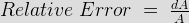
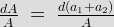
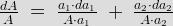
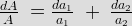

Measured Value
Limiting Errors or Guarantee Errors
Relative Error or Fractional Error
Types of Errors
• Gross
• Systematic
• Instrumental
• Environmental
• Observational
• Random
In order to understand the concept of errors in measurement, we should know the two terms that defines the error and these two terms are written below:
True Value
It is not possible to determine the true of quantity by experiment means. True value may be defined as the average value of an infinite number of measured values when average deviation due to various contributing factor will approach to zero.
Measured Value
It may be defined as the approximated value of true value. It can be found out by taking means of several measured readings during an experiment, by applying suitable approximations on physical conditions.
Now we are in a position to define static error. Static error is defined as the difference of the measured value and the true value of the quantity. Mathematically we can write an expression of error as, dA = Am - At where dA is the static error Am is measured value and At is true value.
It may be noted that the absolute value of error cannot be determined as due to the fact that the true value of quantity cannot be determined accurately.
Let us consider few terms related to errors.
Limiting Errors or Guarantee Errors
The concept of guarantee errors can better clear if we study this kind of error by considering one example. Suppose there is a manufacturer who manufacture an ammeter, now he should promises that the error in the ammeter he is selling not greater the limit he sets. This limit of error is known as limiting errors or guarantee error.
Relative Error or Fractional Error
It is defined as the ratio of the error and the specified magnitude of the quantity. Mathematically we write as,

Where dA is the error and A is the magnitude.
Now here we are interested in computing resultant limiting error under the following cases:
(a) By taking the sum of two quantities: Let us consider two measured quantities a1 and a2. The sum of these two quantities can be represented by A. Thus we can write A = a1 + a2. Now the relative incremental value of this function can be calculated as

Separating the each term as shown below and by multiplying and dividing a1 with the first term and a2 with the second term we have

From the above equation we can see that the resultant limiting error is equal to the sum of products formed by multiplying the individual relative limiting errors by the ratio of each term to the function. Same procedure can be applied to calculate the resultant limiting error due to summation of more than two quantities. In order to calculate the resultant limiting error due to difference of the two quantities just change the addition sign with subtraction and rest procedure is same.
(b) By taking the product of two quantities: Let us consider two quantities a1 and a2. In this case the product of the two quantities are expressed as A = a1.a2. Now taking log both sides and differentiating with respect to A we have resultant limiting errors as

From this equation we can see that the resultant error is summation of relative errors in measurement of terms. Similarly we can calculate the resultant limiting error for power of factor. Hence the relative error would be n times in this case.
Types of Errors
Basically there are three types of errors on the basis; they may arise from the source.
Gross Errors
This category of errors includes all the human mistakes while reading, recording and the readings. Mistakes in calculating the errors also come under this category. For example while taking the reading from the meter of the instrument he may read 21 as 31. All these types of error are come under this category. Gross errors can be avoided by using two suitable measures and they are written below:
(i) A proper care should be taken in reading, recording the data. Also calculation of error should be done accurately.
(ii) By increasing the number of experimenters we can reduce the gross errors. If each experimenter takes different reading at different points, then by taking average of more readings we can reduce the gross errors.
Systematic Errors
In order to understand these kinds of errors, let us categorize the systematic errors as
(i) Instrumental Errors
These errors may be due to wrong construction, calibration of the measuring instruments. These types of error may be arises due to friction or may be due to hysteresis. These types of errors also include the loading effect and misuse of the instruments. Misuse of the instruments results in the failure to the adjust the zero of instruments. In order to minimize the gross errors in measurement various correction factors must be applied and in extreme condition instrument must be re-calibrated carefully.
(ii) Environmental Errors
This type of error arises due to conditions external to instrument. External condition includes temperature, pressure, humidity or it may include external magnetic field. Following are the steps that one must follow in order to minimize the environmental errors:
(A)Try to maintain the temperature and humidity of the laboratory constant by making some arrangements.
(B)Ensure that there should not be any external magnetic or electrostatic field around the instrument.
Observational Errors
As the name suggests these types of errors are due wrong observations. The wrong observations may be due to PARALLAX. In order to minimize the PARALLAX error highly accurate meters are required, provided with mirrored scales.
Random Errors
After calculating all systematic errors, it is found that there are still some errors in measurement are left. These errors are known as random errors. Some of the reasons of the appearance of these errors are known but still some reasons are unknown. Hence we cannot fully eliminate these kinds of error.
 by
by